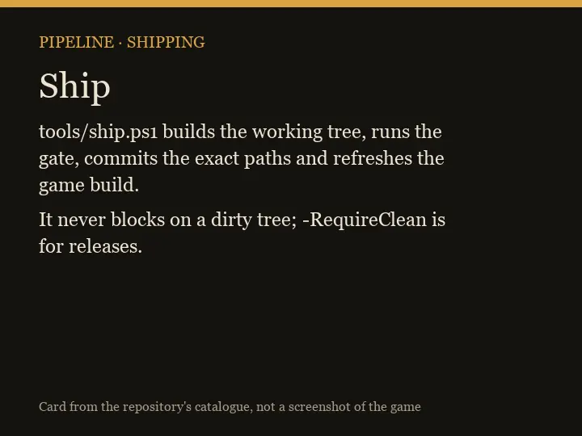

Ship

tools/ship.ps1 takes a change from the working tree to preview: it checks the branch, runs the gate, commits the paths it is given, builds, runs a smoke test, pushes and refreshes the game the maintainer plays. The sequence and its traps are already solved in the script, so an agent runs two commands and reads the result.
The steps
- Checks. The branch, that Unity is not open on the project, that no copy of the game runs from the build folder.
- Gate. Check suite and the Python unit tests. A failure stops the run before anything is committed.
- Commit. The exact paths given with
-Paths, with the message from-MessageFile. - Build. A full build when a non-code file changed, otherwise a scripts-only build (
-Mode auto,fullorscripts). The build is of the working tree, so the run lists the uncommitted sources it contains. - Smoke test. The navigation check with seed 1000 on two floors, without graphics.
- Push. Never forced. Stops on any refused push.
- Refresh.
Builds\PryingEyes.exeis updated when the game is closed; if it is open, the copy finishes by itself when it closes.
The result is printed as SHIP: OK, SHIP: FALLITO or SHIP: INTERROTTO, with the record in unity_logs/ship_last.log. Options: -Detach and -Wait for an agent, -DryRun to test without changing anything, -NoBuild, -NoPush and -NoExe.
Releases
-RequireClean refuses a dirty tree before the build, which is what a release needs. Releases are made with release, only on request.